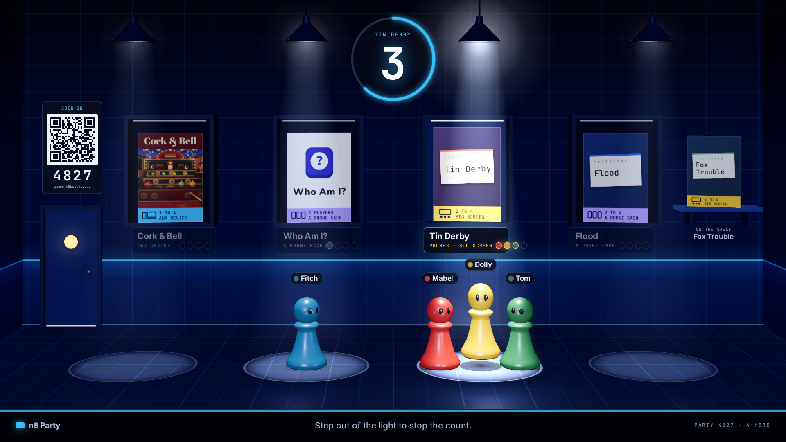
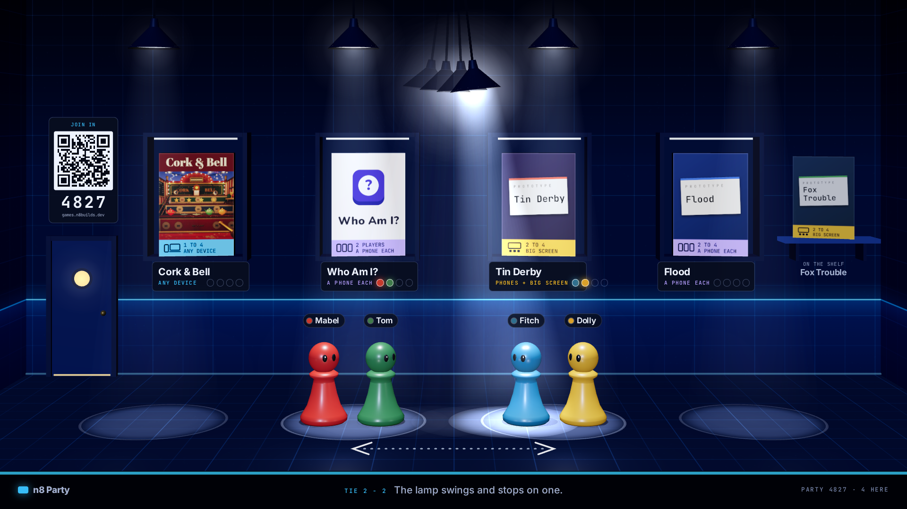
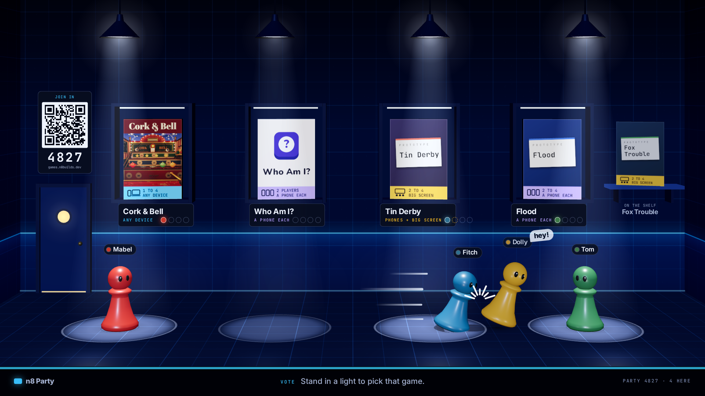

One room, four lights. Your vote is where you stand.
These are stills, drawn to look like a frame from the real thing. Nothing here is playable.
The room is seen from the side, like a stage. Each game box hangs over a pool of light. Stand in a pool and you are voting for that game; stand in the dark and you have not decided.
Tap or click a picture to open it full size.

The whole room, mid-vote
Mabel and Fitch stand under Cork & Bell, so that light is the brightest and its plate shows two pips. Dolly is alone under Tin Derby, and Tom is walking in the dark, undecided. Latecomers scan the sign by the door, and the fifth game, Fox Trouble, waits on the shelf at the right.
Whether the game on the shelf swaps in by itself after each game, or a player has to fetch it.
The playing piece in every picture is a stand-in. A skin (a slime, a robot, anything) replaces the shape; the seat colour and the name tag stay the same.

The same moment, on Dolly's phone
The whole room still fits, so everyone sees the same thing. Your piece wears a white "You" tag and a ring on the floor, and the controls sit on the front of the stage, under the action. The phone drops the lamps, the QR code and the "what you need" line on each plate.
Whether the phone should show the whole room like this, or zoom in and follow you.


Everyone has picked: the count
Three of four chose Tin Derby. Its light is the only bright one, its box leans forward, the other plates fade, and one ring on the wall counts down. Stepping out of the light stops the count.
Whether the count starts when everyone stands in a light (drawn here), or only when everyone agrees; and how many seconds it runs.


A tie: the lamp picks
Two against two. The other lights go low and one lamp swings back and forth between the tied pools; the game it stops over is the one you play. The faint lamps are its trail, and the dotted line on the floor shows the two ends of the swing.
Whether a swing of a few seconds is welcome every time, or a tie should just be settled at once.


Can you shove a friend out of the light?
Fitch runs into Dolly and knocks her out of the Tin Derby pool. Her pip on the plate turns into a dashed outline: her vote is gone until she walks back in.
Yes or no. With shoving the lobby is a small game of its own; without it, people simply pass through each other and the vote stays calm.

The same moment in a warmer room
Same layout and rules as picture 1, different mood: wooden boards, warm lamps and a string of bulbs, closer to the Cork & Bell fairground than to the n8builds.dev navy.
Which room: the navy workshop, this one, or one room per party picked at random.